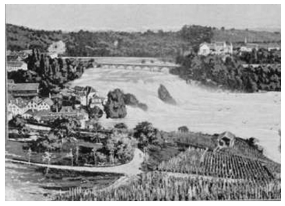

Kutsal Ruh, bir güvercin ya da kartaldır. Eski Ahit’te kartaldı, Yeni Ahit’te ise bir güvercin.[11]
Hıristiyan dünyasının her yerinde Güvercin Kiliseleri ve Kartal Kiliseleri vardır. Bir de yalnızca zevk ve mantık için yapılmış, Kutsal Ruh’a ait olmayan Londra’daki Wren Kiliseleri.[12]
Güvercin Kiliseleri utangaç ve gizlidir: Ağaçlar arasındadır ve çanları pazar gününün yumuşaklığında duyulur; ya da kimse onları fark etmesin diye kasabaların ortasında kendi sessizliklerinde toplanırlar. Sanki görünmezdirler; yoğun trafik akımını engellemezler.
Ama Kartal Kiliseleri, göklere yükselen başlarıyla, aşağıdaki dünyaya meydan okur gibi hep yükseklerde durur. Onlar Davut ruhunun kiliseleridir ve çanları tutkuyla, buyururcasına, aşağıdaki boyun eğenler dünyasına saldırırcasına çalar.
San Francesco Kilisesi, bir güvercin kilisesiydi. Birkaç kez onun bir kilise olduğunu fark etmeden o karanlık, sessiz ve küçük meydandan geçtim. Pembe badanalı duvarlar donuklaşmıştı, penceresizdi ve göze çarpmıyordu; insan kapıdaki meşe kabuğu renkli perdeyi ya da perdenin altındaki karanlık aralığı fark etmedikçe, kendini belli etmiyordu. Oysa köyün ana kilisesiydi.
Buna karşılık San Tommaso Kilisesi köyün tepesine tünemişti. Parke taşlarıyla döşeli, sular altında kalmış sokaktan geçerken, pek çok kez evlerin arasına baktım, ışıkta yükselen ve evlerin çatılarına tünemiş gibi duran o eski ve ince kiliseyi gördüm. İnce ve gri boynu dimdikti, arkada koyu renkli yapraklar ve yüksek tepenin yamaçları uzanıyordu.
Onu sık sık görüyordum, ama uzunca bir süre bana gerçekten varmış gibi gelmedi. Sanki birisinin ona yaklaşmayı umamayacağı bir şeydi, bir hayaldi. Yeşilliklerle kaplı yamacın göz kamaştırıcılığı karşısında, uzakta, ev çatılarının üstünde dikiliyordu. Köyde parke taşlı eğri büğrü sokaklar, eski yüksek duvarlar, mağaraya benzeyen dükkânlar ve kapılarında bir iki basamak merdiven bulunan evler arasında gömülü kalmıştım.
Günün nasıl geçtiğini, öğle ve akşam çanlarının evlere ve göl kenarına çarpan buyurganca çınlamasından anladım uzun süre. Ama, bu çanların nerede çaldığını sormak aklıma gelmemişti. Ta ki gündelik huzurum bozulana kadar... Artık San Tommaso Kilisesi’nin sesini biliyordum. Kiliseyle aramda canlı bir ilişki oluşmuştu.
Böylece onu bulmak için yola koyuldum, onu ziyaret etmek istiyordum. Çok yakındaydı. Göl kıyısındaki alandan görebiliyordum onu. Köyde yalnızca birkaç yüz kişi yaşıyordu. Kilise bir taş atımlık yerde olmalıydı.
Ama bulamadım. Evin arka kapısından çıkarak arka sokağın dar aralığına saptım. Kadınlar merdiven basamaklarından bana baktı, yaşlı adamlar duvarların karanlık gölgelerinin altında durmuş, bana bakmak için yarı dönerek, yarı çömelerek dikiliyorlardı. Sanki gölgeler dünyasının tuhaf yaratıkları bana bakıyor gibiydi. Başka bir maddedendim ben.
İtalyanlar için “güneşin çocukları” denir. “Gölgenin çocukları” dense daha iyi olurdu. Ruhları karanlık çünkü ve geceye ait. Bu durum onlar için fark etmiyor, karanlık inlerde ve mağaralarda saklanabiliyor olmalılar. Köyün o daracık ve karmakarışık arka yollarında gezinmek, tıpkı başka bir maddeden yaratılmış olanı izleyen sinsi yaratıklar tarafından yapılmış bir labirente girmeye cüret etmek gibiydi. Ben ışık gibi solgun, berrak ve uçucuydum; onlarsa gölge gibi karanlık, kapalı ve sürekliydi.
Bu nedenle köyün dolambaçlı, küçük, derin geçitleri beni çok şaşırtıyordu. Yolumu bulamıyordum. Bir sokağın çıkmaz ucuna doğru koştum, orada güneş ışığı ve zeytin ağaçları seraba benziyordu. Karşımda, yukarıda eski San Tommaso’nun ince, dimdik boynunu gördüm, güneşin altında gri ve solgundu. Ama kiliseye bir türlü ulaşamıyordum. Kendimi yine alanda buldum.
Bir başka gün harap bir taş merdivene rastladım, yürürken insanı tökezleten yarıklarında yaban otları boy vermiş ve duvarın karanlık yüzünden baldırıkara[13] otları sarkan bir yerdi burası. İsteksizce yukarı çıktım; çünkü İtalyanlar bütün derin yan geçitlerde olduğu gibi bu eski merdiveni de tuvalet olarak kullanmıştı.
Yine de kırık merdivenleri tırmandım ve birden San Tommaso’nun sahanlığı, göz kamaştırıcı gün ışığında, bir mucize gibi çıktı karşıma.
Bambaşka bir dünyaydı burası, kartalların dünyasıydı, gururlu bir soyutlanma dünyası. Her şeyin üstünde, gün ışığını bastıran bir aydınlıktaydı; ışıkta asılı bir düzlüktü. Aşağısında köyün birbirine karışmış kiremitli çatıları, onların ötesinde, aşağılarda soluk mavi renkteki su ve karşıda, yüzümün ve göğsümün tam hizasında, aslında çok daha yüksekte olduğu halde benimle aynı düzeyde görünen dağın, gölün öte yakasındaki dağın, berrak ve ışıltılı karları duruyordu.
O anda cennetteydim. Eski kilisenin eşiği gibi aşınmış olan kaldırım taşlarıyla döşeli dörtgen terastan bakıyordum. Terasın çevresini alçak, geniş bir duvar çeviriyordu; tırmandığım cennetin kenar çitleri.
Zeytin ağaçlarının çevredeki topraktan yükselen gümüşi yeşil dumanı toprak rengindeki çatıların arasında yayılırken, aşağıdaki mavi sularda, bir kelebeği andıran kan kırmızı bir yelkenli ilerliyordu.
Bu bana, San Tommaso’nun ve terasının, tıpkı cennetin en alçak basamağı olan Yakup’un merdiveni[14] gibi köyün üzerinde duruşunu anımsatır hep. Arkada zemin keskin bir eğri çizerek yükselir. Ama San Tommaso terası cennetten inmiştir, dünyaya değmez.
Kiliseye girdim. Karanlıktı ve dokusuna yüzyılların tütsüsü işlemişti. Dev bir yaratığın ini gibi etkiliyordu beni. Tüm duyularım ayaklanmış, sıcak ve baharatlı bir karanlıkta uykusundan uyanmıştı. Tenim hazırdı, bir dokunuşu, bir sarılışı bekler gibiydi; tıpkı maddenin bileşimine, karanlığa ve kapalı mekânın ağır ve imalı özüne yabancı değilmiş gibi. Duyuların koyu ve yabanıl karanlığıydı bu. Ama ruhum ürktü bundan.
Yeniden dışarı çıktım. Taş eşik bir mücevher gibi berraktı. Yükseklerde maviye dönüşen güneş ışığının görkemli duruluğu beni sanki içine soğuruyordu.
Karşıda ağır yüklü dağ, göl kıyısı boyunca yere çömelmişti; üst yarısı göğe ait gibi parlak beyazdı, alt yarısı ise karanlık ve zalim. Bir bakıma burası cennetle yeryüzünün ayrıldığı yerdi.[15] Arkamda, solda, dağ eteklerinin başlangıcını oluşturan bir burun, geniş, soluk gri ve kıraç bir yükseltiden başlayarak, koyu kırmızıdan yaprak kurusuna dek türlü renklere bürünerek, zeytinlerin buğusuna ve göl yüzeyine kadar uzanmıştı. Ve arada kalan soluk mavi göl, yere saplanan göğün kılıcı gibi toprağı ikiye ayırmış, gökyüzünün zaferini gösterir gibi, dağı dağdan ayırmıştı.
Bir süre sonra önümdeki alçak korkuluk duvarına –cennetin duvarına– serilmiş mavi damalı, geniş bir örtü dikkatimi çekti. Merak ettim, niçin oraya serilmiş diye.
Başımı terasın öbür ucuna çevirdiğimde, gri duvardan bir kan lekesi gibi sarkan gebreotu çalısının altında ufak tefek, gri bir kadın gördüm. Parmakları sürekli işliyordu. Tıpkı o gri kilise gibi bu kadın da etkiledi beni, sanki varlık dünyasına ait değilmişim duygusuna kapıldım. Cennetin alçak duvarından aşağılara bakarak yürüyordum. Ama kadın hâlâ gebreotunun altında ve sağlam duvarın önünde dineliyordu, çevresine dikkat etmeden ve dikkat çekmeden. Toprağın bir parçası gibiydi, terasın canlı ve güneşten ağarmış bir taşıydı. Beni fark etmedi, aşağıda uzanan yeryüzüne bakıp bakmamakta kararsız, öylece durduğumun farkında değildi. Güneşten ağarmış sağlam duvarın altında dineliyordu, yuvarlana yuvarlana gelip bir yarığa girmiş bir taş gibiydi sanki...
Başı koyu kırmızı bir yemeniyle bağlıydı; ama kirli karı andıran kısa saçlarının bir tutamı kulağının üstüne çıkmıştı. Ve yün eğiriyordu. Onu o kadar merak ettim ki, geçip gidemedim. Kadın griydi ve önlüğü ve elbisesi ve yemenisi ve elleri ve yüzü güneşten solmuş, güneş lekeli, grimsi, mavimsi, kahverengimsi ve taşlar gibi, solgun yapraklar gibi kendi renksizliklerinde ışıklıydılar. Siyah paltomun içinde kendimi yanlış, sahicilikten yoksun ve dışlanmış hissettim.
Kadın hafif bir yel eser gibi hamaratça yün eğiriyordu. Kolunun altında kurumuş bir tahta parçasından yapılma koyu renkli bir öreke tutuyordu, ucunda sapı bulunan düz bir çubuktu bu. Kadının bir pençeye benzeyen kahverengi parmaklarının arasında bir topak koyu renkli ham yapağı vardı, bu eli omuzuna yakın duruyordu, parmakları aşağıdaki yün yığınından habire yün tutamları yoluyordu. Ayak ucunda, tatlı bir esintiye kapılmış bir nesne gibi sürekli dönerek kara iplik eğiren mekik asılıydı; eğirdiği koyu renkli, kaba yün iplik tahta iğin çevresinde biriktikçe birikiyordu.

Garda Gölü ve çevresi
Parmakları düşünmeksizin sürekli olarak yapağı yünden bir tutam çekip uzatıyor ve hep aynı kalınlıkta büküyordu onu. Kahverengi, kocamış, doğuştan hünerli parmakları uykuda gibi işliyordu; başparmağının tırnağı uzun ve griydi. Başparmağı ile işaretparmağı arasında bükülüp, önlüğüne yaslanarak gelen iplikte, zaman zaman aşağıya doğru bir çekme oluyordu. Ağır iğ daha hızlı hareket edip yün ipliği aşağı doğru çektiğinde kadın bunu hissediyordu; yapağı yünden biraz daha alarak iplik haline getiriyor, sonra iğe hız verip ipliği daha hızlı sarıyordu.
Gözleri gök kadar berraktı, maviydi, gökmavisiydi, gökseldi. Berrak ama bakışsızdılar. Yüzü güneşten ağarmış bir taş gibiydi.
“Yün eğiriyorsunuz,” dedim.
Gözlerini bana çevirdi, hiçbir dikkat belirtisi göstermeden.
“Evet,” dedi.
Yakınında duran bir adamı, bir yabancıyı görmüştü yalnızca. Ben dış dünyanın herhangi bir parçasıydım, fark etmezdi onun için. İstifini bozmadı, yamaçta duran gün görmüş bir taş gibi saf ve dayanıklı, yerinde kaldı. Ufak tefek, sebatlı, çoğu zaman önüne bakarak, yaptığı işi görmeden; ama zaman zaman kısa ve bilinçsiz bir bakışla ipliği kollayarak yerinde duruyordu. Gün ışığından, taştan ve başının biraz üstündeki kımıltısız gebreotundan biraz daha canlıydı. Parmakları hâlâ göğüs hizasındaki yapağının liflerinde gidip geliyordu.
“Çok eski bir eğirme yöntemi bu,” dedim.[16]
“Ne?”
Cennet kadar saf ve aşkın bakışlarla bana baktı. Hafiften etkilenmişti. Bana bakmak için yaptığı dönüşte bir kartalın hafifliği vardı. Gözlerinde uzaklardaki bir ışığın solgun parıltısı. Kulağına yabancı gelen İtalyancamdan ötürüydü bu.
“Yün eğirmek için eski bir yöntem,” diye yineledim.
“Evet, eski bir yöntem.” Bu sözcükleri söylemek onun için doğalmış gibi yineledi. Ve ben onun için yeniden geçici bir olaya dönüştüm, bir adam, çevrenin bir parçası oldum. İkimiz de konuşma yetisine sahiptik, hepsi bu kadardı.
Bana yine baktı, olağanüstü, değişmez, düşünceden uzak, görünür hale gelmiş cennete benzeyen gözlerle, ya da saf, duru bir bilinçsizlikte açmış iki çiçeği andıran gözleriyle. Ben onun için çevrenin bir parçasıydım. Hepsi bu. Dünyası saf ve mutlaktı, benlik bilincinden yoksundu. Benliğinin farkında değildi; çünkü evrende kendi evreni dışında bir şeyin var olduğundan haberi yoktu. Onun dünyasında bir yabancıydım, yabancı bir signore.[17] Onunkinden farklı bir dünyam olduğunu düşünemiyordu. Kafa yormuyordu böyle şeylere.
Biz de yıldızları böyle algılarız. Başka dünyalar olduğu söylenir bize. Ama yıldızlar dünyamızın gece göğünde kümeler halinde ya da tek tek parlayan ışıklardır. Gece eve geldiğimde yıldızlar vardır. Mikrokozmos olarak tek başıma var olmaktan vazgeçip, makrokozmosu, evreni düşünmeye başladığımda, bu kez yıldızlar başka dünyalardır. Ve evren beni emip içine alır. Ama evren ben değildir. O, ben olmayan, yani mikrokozmos olmayan bir şeydir.
Demek ki benim için bilinmez bile olsa, yine de var olan bir şey var. Ben sonluyum ve kavrayışımın sınırları var. Evren, hem akıl yoluyla hem de ruhsal olarak, benim görebileceğimden daha büyük. Yani ben olmayan bir şey var.
“Mars’ta yerleşilmiş,” dersem, Mars’a yapılan gönderme bağlamında “yerleşilmiş” sözcüğü ile ne demek istediğimi tam bilemem. Yalnızca o dünyanın benim dünyam olmadığını kastedebilirim. Ben küçük evrenim, ama bir de ben olmayan büyük evren var.
Terasta, güneşin altında duran yaşlı kadın bunu bilmiyordu. O, dünyanın merkezi, çekirdeği, güneşi ve gök kubbesiydi. Hiç görmediği yerlerde oturduğumu biliyordu. Ama ne vardı bunda! Kendi bedeninde de vardı hiç görmediği ve fizyolojik olarak göremeyeceği yerler. Sonuçta onlar yine de kendi bedenine aitti, onları hiç görmemiş olsa bile. Görmediği topraklar kendi yaşayan bedeninin parçasıydı, habersiz olduğu bilgi yalnızca kendiyle ilgili saklı bilgiydi. Bilginin özü kendisi idi, bilse de bilmese de. Sonuçta o olmayan hiçbir şey yoktu. Erkek bile, erkek cinsi bile onun bir parçasıydı. Hareket eden, ayrı bir parçaydı erkek, bununla birlikte kadının bir parçasıydı, bazen kadından ayrılıyor olsa bile. Dünyadaki elmalar ikiye bölünse bile, elma olarak kalırlar. Gerçeklik elmadır, yarım elma da olsa, bütün elma da olsa, aynıdır.[18]
Ve o, yün eğiren yaşlı kadın, elmaydı, ezeli, değişmez, parçalı oluşunda bile bütün kalan. İşte buydu, gözlerine o olağanüstü saf bilinçsizliği veren şey. Her şey kendisiyken, kendini nasıl ayırt edebilirdi?
Ölmüş bir koyundan söz ediyordu bana, ama şivesinden dolayı iyi anlamıyordum onu. Kendisini anlayamadığımı hiç fark etmedi. Benim yalnızca farklı, aptal olduğumu düşündü. Ve konuşmasını sürdürdü. Koyunlar evin altındaydı, bir bölümü koçun döllemesi için seçilip ayrılmıştı, çünkü başkaları da koyunlarını koça çektirmek için oraya getiriyordu. Ama o koyunun nasıl öldüğünü anlayamadım.
Parmakları yarı sinirli ve küçük hareketlerle sürekli olarak çalışıyor, kelebeklerin ordan oraya kalkıp konması gibi, görünür bir çaba harcamadan işliyordu. Bir yandan yüzüme bakarken, bir yandan da o anlamadığım İtalyancasıyla hızlı hızlı konuşuyordu, çünkü anlattığı öykü onu bir biçimde etkilemişti. Ama yüzünde tek bir çizgi kıpırdamadı. Bakışları saf, içten ve gökler kadar bilinçsiz kaldı. Yalnızca gözlerindeki keskin irade, egemenliği altına almak için, arada bir bana doğru ışıldar gibiydi.
Mekiği kuru bir hindiba dalına takılıp durdu. Kadın farkına varmadı. Eğilip dalları kırdım. Üzerlerinde mavi bir parıltı çakıp söndü. Ne yaptığımı gören kadın, bitkiden beş on santim geriye çekildi. Mekiği serbest kaldı.
Bana olağanüstü bir bakışla bakarak öyküsüne devam etti. Sanki yaratılışı seyrediyordum, dünyanın başlangıcıydı, ilk sabahtı. Gözleri dünyanın ilk sabahı gibiydi, yaşı yok denecek gibiydi.
İpliği koptu. Farkına varmamış göründü, ama eli kendiliğinden mekiğe gitti, biraz iplik boşalttı, ucunu yün lifine bağladı, eğirmeye başlamak için iği ayarladı ve konuşmasını yarı dostça yarı bilinçsiz biçimde, sanki bendeki kendi dünyasına sesleniyormuşcasına sürdürdü.
Güneşte o ufak platformun üzerinde duruyordu. Yaşlı ama sabah gibi dimdik ve tek başına, güneşten bronzlaşmış, güneşten solmuş... Bu arada ben, varlığımı reddedebilir korkusuyla onun dirseğine yakın, ay ve geceden bir parça gibi, gözlerinin içine gülerek öylece duruyordum.
Varlığımı reddetti. Konuşmayı kesti, bana bir daha bakmadı, keyifli keyifli dönen kahverengi mekiğiyle yün eğirmeye devam etti. Öylece güneşe ve havaya ait olarak kaldı, başının üstündeki duvarda asılı koyu renkli gebreotu çalısından daha fazla ilgi göstermedi bana. Bu arada ben, yanında beklemekteyken, siyah giysilerime karşın, gündüz göğünde solmuş, ışığı tükenmiş ay gibiydim.
“Bu kadar ipliği eğirmeniz ne kadar zaman aldı?” diye sordum.
Biraz bekledi, mekiğine baktı.
“Bu kadarını mı? Bilmem. Bir ya da iki gün.”
“Ama çok hızlı eğiriyorsunuz.”
Bana kuşkuyla ve alaylıca baktı. Sonra birden öne doğru yürüdü, terası geçerek duvarda kuruyan mavi beyaz damalı örtüye gitti. Duraksadım. Beni aklından silmişti. Arkamı döndüm ve koşmaya başladım, ondan uzaklaşabilmek için adımlarımı çabuk çabuk atıyordum. Bir süre sonra duvarların arasındaydım, kendimi gizleyerek yukarı tırmanıyordum.
Okul Müdiresi[19] bana kardelenleri San Tommaso’nun arkasında bulacağımı söylemişti. Bilgisine o kadar güvenir bir edayla konuşmamış olsaydı, pekala onun perce-neige’i[20] yanlış çevirdiğinden kuşkulanacaktım. Konuşma boyunca hep Noel çiçeklerini kastetmişti.
Ama ben kardelenleri aramaya gittim. Birdenbire duvarlar yıkıldı, kendimi çimenli bir zeytinlikte buldum ve yıkıntılarının üzerini otlar kaplamış duvarın yanındaki yolu izledim. Yürüye yürüye dik ve dar bir koyağın kenarına geldim, koyağın dibinde bir ırmak göle doğru hızla akıyordu. Kardelenlerimi aramak için burada durdum. Ayaklarımın altında otlarla kaplı kayalık yamaç aşağıya doğru dimdik uzanıyordu. Aşağıdaki derin gölgeliklerde fısıldayarak akan suyun sesini dinledim. Loş ışıkta solgun benekler vardı, ama biliyordum ki, bunlar çuhaçiçekleriydi. Bu yüzden oradan ayrıldım.
Koyağın dibindeki koyu gölgelerden başımı kaldırıp yukarıya, doğrudan gökyüzüne baktığımda, en yüksek gök katında aşkın biçimde parlayan gri kayaları görebiliyordum. “O kadar yüksekteler mi sahiden?” diye düşündüm. “Ben bu kadar alçakta mıyım?” diye sormaya cesaretim yoktu. Ama huzursuzdum. Her şeye karşın soğuk gölgelikte burası güzel bir yerdi, kusursuzdu; insan çok yükseklerde parlayan kayaları düşünmeyecek olursa; gölgenin kusursuz dünyasıydı. Çuhaçiçekleri, koyağın karanlık, dik yamacında öbekler halinde her yeri kaplamıştı; ve eğreltiotu yaprakları her yerden sarkıyordu; çalı altlarında Noel çiçeği öbekleri vardı, neredeyse kuruyup gitmişlerdi, ama hâlâ bazı en soğuk köşelerde bir avuç karı andıran sevimli tomurcuklar da vardı. Karanlık kış boyunca ırmak yatağında o kadar çok Noel çiçeği yetiştiği halde, şimdi bu tek tük kalan çiçekler güçlükle fark ediliyordu.
Onların yerine hava ve toprak kokan çuhaçiçekleri topladım. Hiç kardelen yoktu. Bir gün önce zeytin ağaçlarının altında, çimenlerin arasında küçük küçük on binlerce aleve benzeyen, mor, soluk, kırılgan, koyu damarlı çiğdemler görmüştüm. Ve karanlıkta asılı duran kardelenleri görmeyi çok istiyordum. Ama bir tane bile yoktu.
Bir demet çuhaçiçeği topladım, sonra akşam çökmeden bir an önce güneş ışığına dönebilmek için hızlı hızlı derin dere yatağından yukarı doğru tırmandım. Yukarıda güneşli altın çimenlerin arasında zeytin ağaçlarını gördüm, daha da yukarıda üzerine güneş vurmuş gri kayalar uzanıyordu. Bu karanlık ve nemli yerde bir susamuru gibi el yordamıyla yürürken, akşam karanlığı çökecek, güneş ışığı geçip gidecek diye korkuyordum.
Az sonra yeniden yukarıda, güneş ışığında, zeytin ağaçlarının altındaki çimenlikteydim, yeniden güvenlikteydim. Parıldayan ışığın doruk dünyasıydı burası ve ben yine güven altındaydım.
Tüm zeytinler toplanmıştı ve göl kıyısındaki değirmenler sabah akşam ağır, keskin bir zeytinyağı kokusu salarak işliyordu. Küçük ırmak çağıldayarak akıyordu. Strada Vecchia’da[21] bir adam katırlarına “Hued!”[22] diye bağırdı. Yukarıda, Strada Nuova’da, güzel, yeni, askeri yolda; dağ yamaçlarında hoş kıvrımlar oluşturan, zarif kemerli köprülerle aynı ırmağı birkaç kez kesen, gölün yükseklerinde, dik yamaçlarda oyulmuş bir şerit halinde ilerleyen, Avusturya sınırına doğru hoş bir biçimde kıvrılan ve orada sona eren bu yolda, bu güzel kıvrımlı yolun yukarılarında bir yerde, akşam güneşinde bir hayal gibi ilerleyen bir öküz arabası gördüm. Ama arabanın gıcırtıları ve kamçının şaklayışı sanki yakından geliyormuş gibi kulağımda yankılandı.
Yukarıda her şey berraktı ve güneş rengindeydi, göğün bir parçası olan parlak gri kayalar, koyu sarı otlar ve fundalıklar, servi ağaçlarının kahverengi-yeşil yaprakları ve göle doğru buğulanan gri-yeşil zeytinlerin buğusu. Gölge yoktu; yalnızca göğe kat kat yayılmış parlak güneş cevheri, askeri yolun en yukarı noktasında, güneş altında ağır ağır ilerleyen öküz arabası vardı. Beni benden alan öğle sonrasının sıcak sessizliğinde yere oturdum.
Saat dört vapuru, gölün Avusturya yakasından yola çıkmış, uçurumların altından süzülerek aheste aheste seyrediyordu. Çok açıklarda, gölün Verona kıyısı, adanın ardında donuk altın renginde erimiş gibi uzanıyordu. Karşıdaki dağ öyle sessizdi ki, sanki yüreğimin atışları da yavaşlayıp tıpkı onun gibi duracakmış gibi geldi bana. Her şey olağanüstü durgundu, tepeden tırnağa tözdü. Aşağılardaki dünyanın yüzeyindeki minik vapurun ve yoldaki katırların gölgesi bile oluşmuyordu. Onlar da salt güneş-özüydü ve güneşten oluşmuş dünyanın yüzeyinde hareket ediyorlardı.
Bir çekirge sıçradı yakınımda. Sonra anımsadım ki, dünyayı o tuhaf durgunluk kapladığında günlerden cumartesiydi, öğleden sonraydı. Daha sonra hemen aşağımda, bahçelerindeki çıplak, budaklı asma kütüklerinin arasında yürüyen iki keşiş gördüm; asma kütüklerinin ve zeytin ağaçlarının kışa yaraşır bahçesinde yürüyorlardı; kahverengi cüppeleri, kahverengi kütükler arasından geçiyordu; güneşin altında başları açıktı. Arada sırada, uzun bir adım attıklarında, eteklerinin altından bir ışık parıltısı kımıldıyordu.
Her şey o kadar durgundu ve bütünüyle donup kalmıştı ki, onların konuştuğunu sandım. Keşiş yürüyüşüyle yürüyorlardı; uzun ve rahat adımlarla yapılan bir yürüyüştü bu; başları birbirine yakındı, etekleri hafifçe sallanıyordu; kahverengi iki keşiş, elleri görünmeyen, ve asmaların altından, lahanaların yanından kayar gibi yürüyen iki keşiş, mahrem bir konuşmayı sürdürüyordu birbirine yakın başlarıyla. Sanki karanlık ruhumla onların işitilmeyen fısıltılarına kulak veriyordum. Bütün bu süre boyunca kıpırdamadan sessizce oturdum, onlarla birdim, seslerini işitemiyordum ama konuşmada ben de vardım. Bahçeyi bir uçtan öteki uca, sessizce ve usulca kayan cüppelerinin altındaki ayaklarıyla attıkları geniş adımlarla yürüdüm, sonra geri döndüm. Giysilerinin uzun kol yenlerine ve cüppelerinin eteklerine gizlenmiş elleri yanlarında sarkıyordu. Keşişler yürürken birbirlerine değmedikleri gibi, el kol hareketleri de yapmadı. Uzun adımlarla gizli gizli yürüyüşlerinden ve başlarının birbirine eğilmesinden başka hareket yoktu. Ama konuşmalarında bir heves vardı. Sanki soğuk ve belirsiz varlıklarını tehlikeye atan gölgeyaratıklar gibiydiler, hiç kimsenin kendilerini görmeyeceğini düşünerek, kış izlenimi veren bahçelerinde bir ileri bir geri yürüyorlardı.
Öte yakada, başlarının hizasında, karlar belli belirsiz ve heyecan verici biçimde gözleri kamaştırıyordu. Gözlerini kaldırıp bir kez bile bakmadılar. Ama yürümeyi sürdürürlerken kardaki parıltılar da kızıllaşmaya başladı, akşam inerken cennette göz alabildiğine uzanan karlı tepelerin semavi ve solgun kızıllığı alevlenmeye başladı. Bambaşka bir dünya oluşuyordu, soğuk, benzersiz bir gece. Karşıdaki dağ zirvelerinin üstündeki zarif ve buz tutmuş gülde gün ağarıyordu. Keşişler akşam karanlığının ilk gölgeleri altında, konuşarak bir aşağı bir yukarı yürüyordu.
Yukarlarda karların üstünde, mavimsi gökte kırılgan bir ay yükseliyordu, yaklaşan gecenin usul usul akışında yüzen tarazlanmış bir buz tabakasına benzeyen kırılgan ay. Bir çan çaldı.
Keşişler gezinmeyi sürdürüyor, tuhaf ve yansız bir düzenlilikle, bir ileri bir geri, bir ileri bir geri gidip geliyorlardı.
Batıdaki dağlar yüzünden gölgeler her şeyin üzerini kaplıyordu. Üzerine oturduğum zeytin kütüğü çoktandır görünmez olmuştu. Keşişlerin dünyasıydı burası, gece ve gündüz arasındaki solgunluk sınırıydı. Bu sınırda bir ileri bir geri geziniyorlardı, gölgenin yansız ışığında bir ileri bir geri, bir ileri bir geri.
Ne günün göz alıcı ışığı erişebiliyordu onlara, ne de gecenin mükemmelliği; yasaların yansızlığına ayak basan alacakaranlığın dar patikasında yürüyorlardı. Yüreklerinde konuşan ne kanlarıydı, ne de ruhları, konuşan yalnızca yasaydı, sıradanın dışlanmasıydı. Sonsuz olan olumlu ve olumsuzdu. Sıradan olan ise yalnızca yansızdı. Ve keşişler bu yansızlık çizgisinde bir ileri bir geri yürüyordu.
Bu sırada dağ silsilesi boyunca karlar, çiçeğe dönüşen cennet gibi, pembe akkor rengini aldı. En sonunda sonsuz olmayanla sonsuz varlık aynı şey oldu. Mükemmelliğin kendinden geçiriciliği pembe karda, yani karanlık dünyanın üzerinde parlayan cennetteydi. Gece ve gündüz birdi, aydınlık ve karanlık birdi, her ikisi de kaynağında ve ondan doğan aynı şeydi ikisi de bu kendinden geçme anında aynıydı; aydınlık karanlıkta eridi, karanlık da aydınlıkta, tıpkı alacakaranlığın üstündeki pembe karda olduğu gibi.
Ama keşişlerin hali, kendinden geçme hali değil, yansızlık haliydi, dünya ötesi bir haldi. Mükemmelliğin pembe karları, alacakaranlığa gömülmüş, gölgelenmiş dünyanın üzerinde, aşkınlık katındaydı. Ama bizden çok uzaklara, ta aşağılara kadar uzanan şey, alacakaranlığın ve keşişlerin yansızlığıydı. Ruhu yansızlaştıran ten, teni yansızlaştıran ruh; keşişler bir ileri bir geri yürüdüklerinde sıradan insanın yasası gerçekleşiyordu.
Karlı, soluk renkli sırtların üstünde ay yükseldi; yavaş yavaş adına yaraşır hale geldi. Zeytin ağacının kökleri arasında pembe uçlu bir papatya uykuya dalmak üzereydi. Onu koparıp kırılgan ve üstlerine ay ışığı vurmuş küçümen çuhaçiçeklerinin arasına yerleştirdim, uykusu ötekileri de ısıtsın diye. Ayrıca bana yaşlı kadının gözlerini anımsatan masmavi cezayirmenekşelerinden de koydum birkaç tane.
Gün sona ermişti, alacakaranlık sona ermişti, göl kıyısına indiğimde karlar da görünmez oldu. Yalnızca beyaz ve parlak ay vardı gökyüzünde, güzelliğiyle övünen bir kadın gibi, bütün dünyanın bakışları altında salınarak dolaşan, kimi zaman koyu renkli zeytin yaprakları arasından göz kırpan, kimi zaman da gölün sularında çırılçıplak, titreyişler içindeki nefis vücudunu seyreden ay.
Benim minik yaşlı kadınım gitmişti. O –bütün bir gün ışığı– ayın parlaklığına sahip değildi. O her zaman tüm dünyayı bir bakışta görebilen ve her şey kendisine bağlı olan bir kuş gibi yaşamalıydı; onun uyanık bilinci, dünyanın üzerinde uçan bir şahin gibi ya da uyanıklık uykusu gibiydi. Ve gölgeler indiğinde, tıpkı bir kuş gibi uykuya dalıyordu.
Yaşlı kadın, şahane bir ay altında uyanan duygular aracılığıyla, duygulardan vazgeçmeyi ve bilinmeyenin sahiplenilmesini bilmiyordu. Bütün görkemiyle parlayan güneş, bu vazgeçmelerden habersizdi. Kendi yolunu tutturuyordu o. Ve papatyalar hemen uykuya dalıyordu. Ve yün eğiren yaşlı kadının ruhu, günbatımında işini bitirdi, gerisi bir uykuydu artık, bir ara vermeydi.
Her şey tuhaf ve çok çeşitliydi: Gecede ve ay ışığında kendilerinden geçen esmer tenli İtalyanlar, hamarat gün ışığında kendinden geçmiş mavi gözlü yaşlı kadın, yalnızca sıradanın yansızlığından geçerek, İtalyanları ve yaşlı kadını birleştirmeleri beklenen aşağı bahçedeki keşişler. Öyleyse buluşma noktası nerede; insanlıkta aydınlık ve karanlığın birlikteliği nerede; gurup kızıllığının en yüce aşkınlığı nerede; cennette birbirine sarılmış iki melek gibi, Orpheus’un kollarındaki Eurydike gibi, ya da Pluton tarafından kucaklanmış Persephone gibi, gelmekte olan gecenin kucağında eriyen gün nerede?[23]
Geceyi ve gündüzü şölene çeviren insanlıktaki o en yüce buluşma nerede; onu amaçlamak ve onda birleşmek nerede; tekil bedenin ve ruhun rahatça feda edilişinde, ay altında yaşanan o kendinden geçiş nerede? Güneşi ve karanlığı, gündüzü ve geceyi, ruhu ve duyuları birleştiren, yüreklerimizdeki o aşkın bilgi nerede? Niçin bilmiyoruz, ikisinin birleşince bir olduğunu; tek tek her birinin ancak parça olabildiğini, sonsuza dek yarım ve yalnız kalacağını; yalnızlık ve teklik zincirinin ötesinde ise, ikisinin birlikte mükemmeli oluşturduğunu?